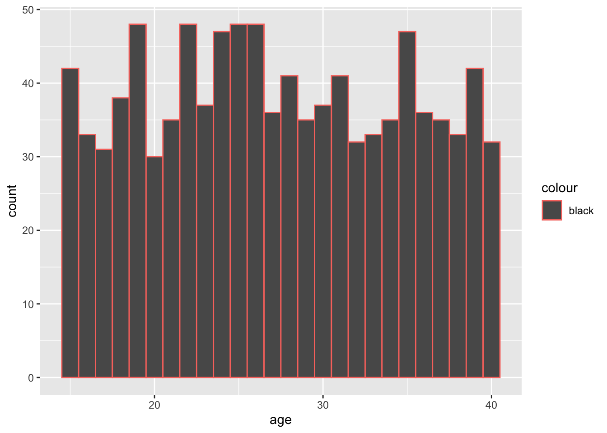
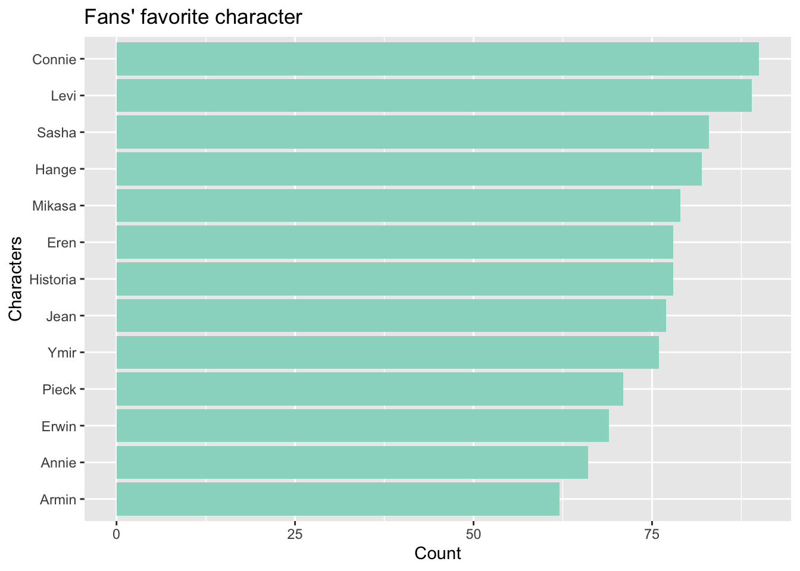
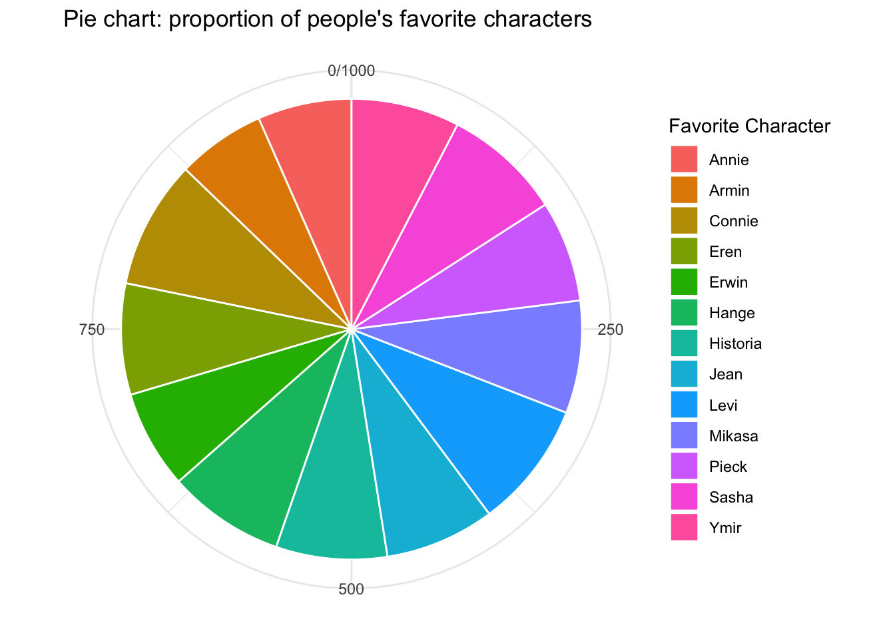

In this portfoloio piece, I want to work with something related to my favorite anime – attack on titan. This is a great anime, check it out if you haven’t already. There are no large data frames for this anime. So, I asked chatgpt to generate a dataset that has 1000 observations. A thousand participants answered our survey. We ask about their gender, age, favorite character in the show, least favorite character in the show, their rating for the entire show, favorite season of the show, which faction they will join, the personality trait that best describes them, and which titan they want to be.
You are probably asking becoming a titan?! If you haven’t seen the
show, this is fair to question. I will be providing more background
information as we go through the dataset.
First step, load libraries and data.
library(readr)
library(tidyverse)## ── Attaching core tidyverse packages ──────────────────────── tidyverse 2.0.0 ──
## ✔ dplyr 1.1.4 ✔ purrr 1.0.4
## ✔ forcats 1.0.0 ✔ stringr 1.5.1
## ✔ ggplot2 3.5.1 ✔ tibble 3.2.1
## ✔ lubridate 1.9.3 ✔ tidyr 1.3.1
## ── Conflicts ────────────────────────────────────────── tidyverse_conflicts() ──
## ✖ dplyr::filter() masks stats::filter()
## ✖ dplyr::lag() masks stats::lag()
## ℹ Use the conflicted package (<http://conflicted.r-lib.org/>) to force all conflicts to become errorslibrary(forcats)
data <- read_csv("aot_fan_dataset_v2.csv")## Rows: 1000 Columns: 10
## ── Column specification ────────────────────────────────────────────────────────
## Delimiter: ","
## chr (7): gender, fav_character, least_fav_character, favorite_aot_season, jo...
## dbl (3): id, age, rating
##
## ℹ Use `spec()` to retrieve the full column specification for this data.
## ℹ Specify the column types or set `show_col_types = FALSE` to quiet this message.Since chatgpt generated this dataset, I assume it would be quite random, meaning that the age of the participants should be fairly spread out, and that the gender will probably be equal too. Just to see how chatgpt randomly create a dataset, let’s find out the distribution of gender and age.
summary(data$age)## Min. 1st Qu. Median Mean 3rd Qu. Max.
## 15.00 21.00 27.00 27.33 34.00 40.00The smallest fan is 15 yo, and the oldest fan is 40 yo. I still want to find out if the distribution of the dataset is normal.
data %>%
ggplot(aes(x = age, color = "black")) + geom_histogram(binwidth = 1)
The answer is no, age is not normally distributed. It’s pretty random it seems like.
data %>%
count(gender)## # A tibble: 5 × 2
## gender n
## <chr> <int>
## 1 F 478
## 2 M 418
## 3 NB 47
## 4 Other 36
## 5 Prefer not to say 21Okay, so there are more females than males in this dataset. Anyway, very fun to explore. Chatgpt is mysterious!
Next, let’s explore people’s favorite character in the show. There
are a lot of characters, and many of them are charming. My favorite
character is probably Levi. Levi Ackerman is the captain of the survey
corps special operations squad. He is very competent, extremely good at
killing titans. He is very composed in fights. All in all, he is a very
charismatic character. Here is Levi:
data %>%
count(fav_character) %>%
arrange(desc(n))## # A tibble: 13 × 2
## fav_character n
## <chr> <int>
## 1 Connie 90
## 2 Levi 89
## 3 Sasha 83
## 4 Hange 82
## 5 Mikasa 79
## 6 Eren 78
## 7 Historia 78
## 8 Jean 77
## 9 Ymir 76
## 10 Pieck 71
## 11 Erwin 69
## 12 Annie 66
## 13 Armin 62It’s a little surprising that Connie got the most vote.
data %>%
ggplot(aes(y = fct_rev(fct_infreq(fav_character)))) + geom_bar(fill = "#99d8c9") +
labs(title = "Fans' favorite character",
x = "Count",
y = "Characters")
Here’s Connie:
I want to create a new variable that’s the proportion of fan’s favorite character.
prop <- data %>%
count(fav_character) %>%
mutate(proportion = n / sum(n))Now let’s plot a pie chart with this new data frame.
I want to give credit to this video: https://www.youtube.com/watch?v=ueLozxgEnDc
prop %>%
ggplot(aes(x = "", y = n, fill = fav_character)) + geom_col(color = "white") +
coord_polar("y") +
labs(title = "Pie chart: proportion of people's favorite characters",
x = NULL,
y = NULL,
fill = "Favorite Character") +
theme_minimal()
I am interested in the least favorite character. I remember hating one character so much. Rationally speaking, this character has her reason for doing things. However, I am not on her side, so that’s why I hated her so much. There really is no right wrong objectively. You reach different conclusions when you change your standpoint. That’s what this show teaches me.
data %>%
count(least_fav_character) %>%
arrange(desc(n))## # A tibble: 11 × 2
## least_fav_character n
## <chr> <int>
## 1 Bertholdt 106
## 2 Zeke 104
## 3 Reiner 96
## 4 Rod Reiss 94
## 5 Kenny 92
## 6 Gabi 88
## 7 Ymir 87
## 8 Floch 85
## 9 Nile 85
## 10 Grisha 83
## 11 Porco 80The least popular character is a little surprising to me as well. Bertholdt was okay to me. Also, Ymir appeared in both the favorite and the least favorite. SPOILERS ALERT: there are two Ymir in the show, so I don’t know which one is which.
Let’s see people’s ratings!
data %>%
count(rating) %>%
arrange(desc(n))## # A tibble: 5 × 2
## rating n
## <dbl> <int>
## 1 9 353
## 2 8 256
## 3 10 239
## 4 7 104
## 5 6 48summary(data$rating)## Min. 1st Qu. Median Mean 3rd Qu. Max.
## 6.000 8.000 9.000 8.631 9.000 10.000The ratings range from 6-10. The mean is 8.63, which I think is pretty high. The most frequent rating is 9. I would give it a 9.5, but there is no such point, so I will give it a 9. I am a little unhappy about the ending of the show.
data %>%
group_by(gender) %>%
summarise(
mean_rating = mean(rating),
sd_rating = sd(rating),
n = n())## # A tibble: 5 × 4
## gender mean_rating sd_rating n
## <chr> <dbl> <dbl> <int>
## 1 F 8.65 1.09 478
## 2 M 8.63 1.11 418
## 3 NB 8.55 0.904 47
## 4 Other 8.56 1.16 36
## 5 Prefer not to say 8.52 1.36 21Looking at this result, I don’t think there is a significant difference between males and females in their rating.
Which season is people’s favorite?
data %>%
count(favorite_aot_season) %>%
arrange(desc(n))## # A tibble: 6 × 2
## favorite_aot_season n
## <chr> <int>
## 1 Season 4 Part 2 179
## 2 Season 2 168
## 3 Season 1 167
## 4 Season 3 166
## 5 Season 4 Part 1 166
## 6 Final Chapters 154I can’t recall the specific plots in season 4 part 2. The songs were really beautiful I think. My favorites are season 1, 2, 3. The latter ones are just as great, but it is very different. I strongly recommend the show!
More analysis will be carried out in portfolio 5!